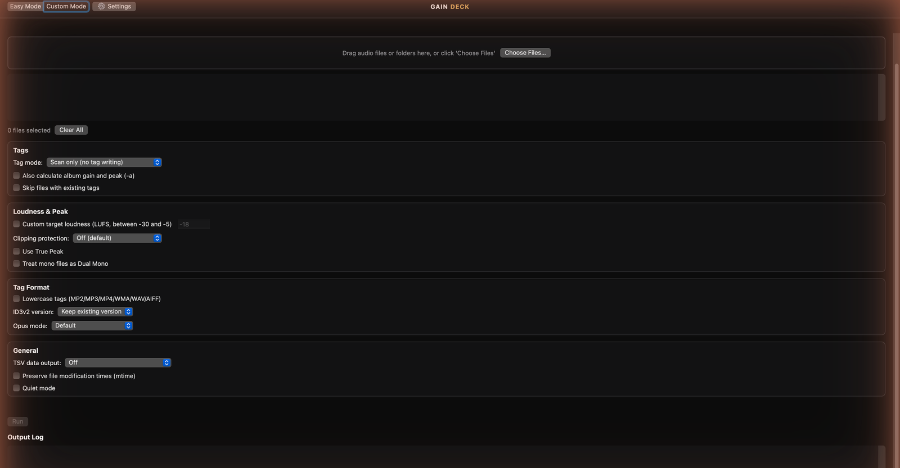
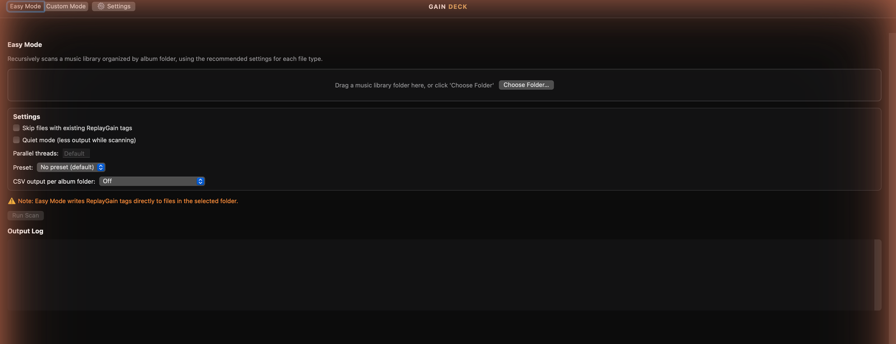

A folder at a time
Easy Mode scans an album-organized library and writes ReplayGain tags, with controls for existing tags, presets, and processing.
A WEBServices audio utility
Analyze your tracks and albums. Add loudness tags that compatible players can use to smooth out volume jumps. All from a focused native Mac app.
Apple Silicon · ReplayGain 2.0 · Powered by rsgain

Release candidate
The RC installer has not been published yet. This page will link to the signed download, release notes, checksum, and engine sources when it is ready.
Made for your music library
Easy Mode scans an album-organized library and writes ReplayGain tags, with controls for existing tags, presets, and processing.
Custom Mode lets you analyze without changing files, write tags, or remove existing ReplayGain metadata. Audio is not re-encoded.
Follow processing in the output log and inspect loudness, gain, and peak values when tabular output is enabled.
A look inside
These screenshots document the earlier 1.0.0 interface. New RC captures will replace them after the refreshed application is verified.

ReplayGain stores loudness information as metadata. A player that supports ReplayGain and has it enabled can use those tags to adjust playback volume.
A successful scan does not guarantee a change in every music app. Try a copied album in your usual player before processing your library.
Data and privacyIndependent Mac software
Report a problem, suggest an improvement, or support continued development.